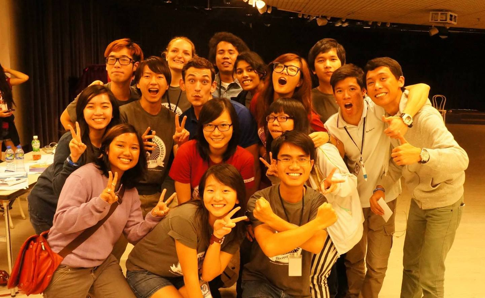

簡易版プロフィールページはこちら
自己紹介
| 名前 | 實重 遊(さねしげ ゆう) |
| 生年月日 | 1994年1月19日 |
| 出身地 | 大阪府豊中市 |
| 居住地 | 東京都中央区 |
| 趣味 | 旅行、読書 |
| 滞在した国・地域 | 中国、台湾、香港、フィリピン、ベトナム、タイ、インドネシア、マレーシア、シンガポール、タンザニア |
| 好きな本 | 坂の上の雲、夜と霧、江副浩正 |
| スポーツ経験 | ハンドボール、水泳 |
| 資格 | TOEIC 870点 基本情報技術者 |
| URL | Facebook
Wantedly インターン先体験談 |
学歴
- 2012/3 大阪府立茨木高等学校 卒業
- 2016/3 神戸大学 経営学部 経営学科 卒業
大学在学時の学業
経営学、会計学、市場経済学について広く学んだのち、三矢 裕教授ゼミに所属。3年次は、東証一部上場企業の戦略策定合宿に参加させていただき、「大手企業において新規事業を生み出す方法」について研究。
4年次は、がっちりマンデー「 儲かるシニアベンチャー」特集 にヒントをもらい、「高齢者が成果を上げる人材管理手法」」をテーマに複数社インタビューを行い研究。
株式会社アクアテック 玉川社長とのインタビュー。社長の右側が實重。後輩3人も共同研究として同席。
社員の平均年齢はなんと「64歳」（2015年インタビュー当時）
大学在学時の課外活動
海外インターンシップを運営する学生NPO団体アイセックに所属。1,2年次には、日本企業に対して海外インターンシップ生の受け入れをお願いする法人営業に従事。
また、香港で開催された国際会議に参加し、アジアを中心に世界中の学生と多様なテーマについて議論し、世界の面白さを感じる。

3年次には副委員長になり組織運営に携わる一方で、自らもタンザニア ダルエスサラームにおける孤児院支援のインターンシップに参加。
タンザニアでは、現地のAIESECのスタッフに加えて、ドイツ、オーストリア、スウェーデン、ノルウェー、中国などから集まった仲間たちとファンドレイズを実施。
子供達と一緒にブレスレットやポストカードを作り、販売。道路における販売はVisaに問題ありということで逮捕されかけるも、ショッピングモールでの販売許可を交渉の末獲得し、 孤児院への一定金額の寄付を達成。

ブレスレット作り

ショピングモールで販売。この場所借りの交渉は難航し、執念が求められた。
職歴
- 2016/3~2016/7 NIHON ASSIST SINGAPORE PTE LTD インターン
- 2016/8~2018/11 アクセンチュア株式会社 アナリスト
- 2018/12~2020/3 アクセンチュア株式会社 コンサルタント
- 2020/4~現在 フリーランスとしてHRプロダクトを構想・ニーズ検証
シンガポールにおけるインターン
海外におけるビジネスに携わってみたいという思いから、シンガポールにおける新しい事業作りをサポートするビジネスプロデュース会社においてインターン。シンガポールの市場や制度の調査・分析に従事した後、日系飲食店のシンガポール進出を支援。テストマーケティングや原材料価格の調査を実施し、現地でのメニューの提案などに従事。
体験談のURL

アクセンチュアに入社
入社以来、HR SaaSを軸としたグローバル人事・組織の改革および運用に従事。人事・ITの部長からスタッフクラスまで幅広いカウンターパートと、業務改革やシステム要件定義についての顧客折衝を経験。 また、システム開発のプロジェクトマネジメントとしてオフショアチームと協働。
2年でコンサルタントに昇進し、大手小売業におけるHR SaaSのドイツ展開や、 大手製造業におけるグループ会社20社の人事プロセス・システム統一化など、グローバルプロジェクトのチームリーダーを複数経験。

フィリピンオフィス訪問。